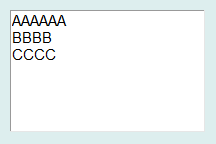
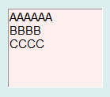

文本控件可用于显示多行文字或数字，其显示的图形显示效果如下：

在Python程序GUI界面中创建一个文本控件的命令为:
hl=dr.dr.DRTextX(win,x,y,w,h,bg,fg,txt,fontsize)
其中hl是创建时用户设定的变量名。标签控件有2个属性函数，可用于设定其所显示的文字或数字，也可以用于获取其所显示的文字或数字。
hl.setValueString(txt)
txt=hl.getValueString()
文本控件是从Tkinter的Text控件继承而来，因此必要时还可以通过Tkinter_Text控件的属性和方法来对其进行装饰。例如，下面语句将已创建的标签控件的背景色设为粉红色。
hl.ax.config(bg='#ffeeee')
显示效果为：

更多有关Tkinter_Text控件的详细用法请参阅Tkinter文献。
.